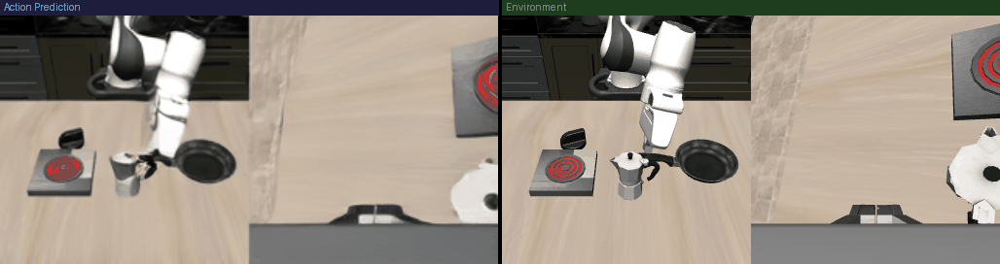

Does physics-focused pretraining transfer to robot rollout success?
Null result (large-scale, 20 seeds x 40 trials): no detectable transfer
Testing whether fine-tuning Cosmos3-Edge's video generation on physics-relevant footage
(before any task-specific training) improves downstream LIBERO-10 manipulation success, versus the
stock pretrained backbone. Both the backbone and the action-adaptation data were held constant
across arms so any gap reflects backbone quality, not training budget.
Setup. Three Cosmos3-Edge backbones:
stock (public pretrained checkpoint, untouched),
WISA (500 iters of vision-only continued pretrain on 254 clips of real-world explosions/smoke/splashes
from
WISA-80K), and
tower (500 iters on
300 windows of our own bimanual-arm block-stacking teleop data -- rigid-body manipulation physics,
much closer to LIBERO's own domain than WISA's VFX content). All three were then adapted to LIBERO-10
with an
identical 5-shot action-SFT recipe (5 demos/task instead of the ~38/task full dataset,
1500 iters, full-parameter) so the action head can't just memorize its way to a good score regardless
of backbone -- any success-rate gap should come from the backbone, not the data volume.
Headline: no effect, at a sample size large enough to trust. First pass (5 seeds, 20 trials/task,
1000 episodes/arm) suggested WISA might be ahead. A second pass with 3 more seeds flipped the direction.
Scaled to 20 seeds x 40 trials/task (8000 episodes/arm), stock/WISA/tower land within 1 point of
each other -- 15.28% / 14.65% / 14.20% -- and stock is marginally ahead of both continued-pretrain
variants. Neither the VFX-physics data (WISA) nor the much more LIBERO-adjacent real-manipulation data
(tower) produced a measurable transfer effect at this scale.
A bigger finding: the seed itself dominates. Per-seed success rate has std ~8.6-9.0 points
across the 20 seeds (range 2.5%-39%) -- roughly 5x the ~1.8-point standard error that 400-trial
binomial sampling noise alone would predict. The diffusion sampling seed systematically determines how
good this 5-shot policy's action trajectories are, independent of which backbone it was adapted from.
At this few-shot scale, backbone differences (if any) are swamped by this seed effect.
In progress. A LoRA follow-up (freeze the backbone, train only rank-128 LoRA + fresh action heads)
is running to check whether the earlier full-parameter action-SFT stage was simply overwriting whatever
physics prior the continued-pretrain baked into the shared moe_gen weights -- full-SFT and
the continued-pretrain both update the same weight groups, so 1500 further full-parameter iterations is
a plausible washout mechanism. Results to follow.
| backbone | episodes | successes | success rate | per-seed mean / std |
|---|
| stock | 7760 | 1186 | 15.28% | 15.46% / 8.59pp |
| WISA (VFX physics) | 8000 | 1172 | 14.65% | 14.65% / 8.96pp |
| tower (real manipulation) | 8000 | 1136 | 14.20% | 14.20% / 8.51pp |
What the policy actually sees
Left half (blue banner): the model's own predicted next-frame video -- this action
policy works by generating a short predicted video and decoding the action from it, not via a separate
action head reading raw pixels. Right half (green banner): the real LIBERO simulator frame. Inside each
half: agentview (third-person, left) concatenated with the wrist camera (right) into one 256x512 image --
that concatenated pair is the actual model input.

Rollout examples (stock vs WISA, same initial state)
illustrative only -- not representative of the null result above
These are real clips from one seed where WISA happened to succeed and stock happened to
fail on the same initial scene. Given the seed-variance finding above, treat these as examples of what a
single lucky/unlucky seed looks like, not evidence of a backbone difference.
turn on the stove and put the moka pot on it
red border = stock (times out, 520/520 steps) / green border = WISA (succeeds, 288 steps)
pick up the book and place it in the back compartment of the caddy
red border = stock (times out, 520/520 steps) / green border = WISA (succeeds, 204 steps)